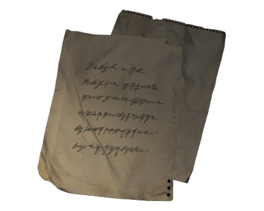

Scribbled Note
Graphite pressed hard, tearing fibers. The lines are slanted downhill—a hand writing fast while standing.
Three words: “red door, basement.” The comma is a dot and a dash, like someone changed their mind mid-mark.
There’s a small circle in the margin and a smudge shaped like a moth’s wing.